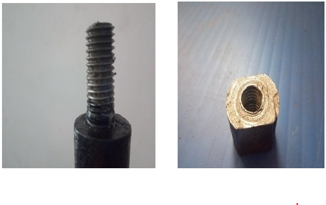
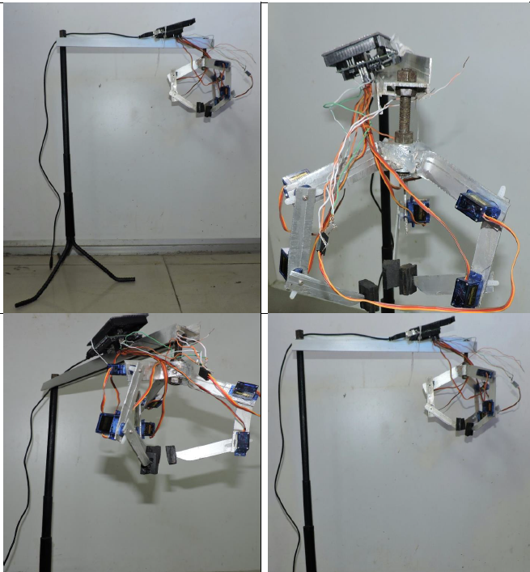
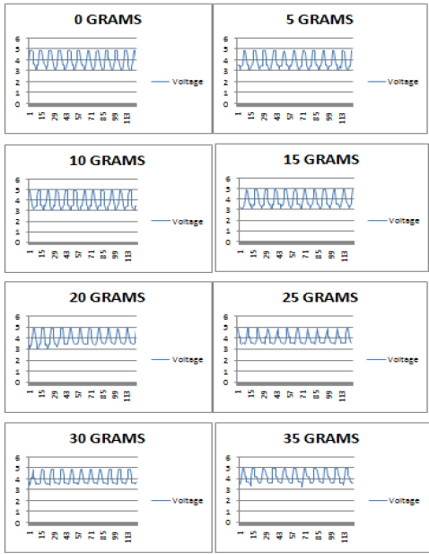

National Institute of Technology Agartala, India · B.Tech Project · Mechanical Design · Robotics
Design, Fabrication and Analysis of a Three-Finger Gripper Actuated by Micro Servos
Affiliation: National Institute of Technology Agartala, India
This undergraduate project focused on developing a three-finger robotic gripper using micro-servo actuation, fully in-house fabricated mechanical components, and experimental evaluation of grasping behavior.
Project overview
The project explored the design of a compact three-finger gripper for robotic grasping applications. The work combined link design, in-house mechanical fabrication, hardware integration, servo actuation, and benchtop testing to create a working prototype.
Every mechanical part of the prototype was fabricated in-house, including the aluminum finger links, drilled and bored servo mounting features, the MS bar, threaded rod, handmade nut, support frame, and gripper assembly. The system was developed as a full gripper rather than only a single finger mechanism, with attention to mechanical construction, grasping layout, and the relationship between applied load and sensor output during testing.
My contribution
- Contributed to the design and in-house fabrication of the complete three-finger gripper mechanism.
- Fabricated or supported fabrication of the mechanical components in-house, including aluminum links, drilled servo mounts, threaded rod, handmade nut, MS bar support, and the suspended test setup.
- Integrated micro servos, structural links, custom fasteners, and the gripper frame into the final working assembly.
- Participated in prototype evaluation and load-response measurements.
- Helped develop and refine the final working prototype shown in the project images.
Objectives
- Design a lightweight three-finger gripper using micro-servo actuation.
- Fabricate the mechanical parts in-house instead of relying on an off-the-shelf gripper platform.
- Build a working prototype and integrate the complete finger assembly.
- Evaluate basic grasping performance and mechanical behavior.
- Measure response under different loading conditions.
Results
- Built a functional prototype of a three-finger servo-actuated gripper with in-house fabricated mechanical hardware.
- Demonstrated complete assembly with custom-made links, handmade threaded components, suspended support structure, and actuation hardware.
- Collected load-response measurements across different test weights.
- Established a practical foundation in mechanism design, assembly, and experimental validation.
Tools and methods
Industry-oriented keywords
Selected figures

In-house fabricated hardware. Hand-threaded shaft and handmade mating nut used in the custom gripper mechanism.

In-house fabricated prototype assembly. Multiple views of the servo-actuated three-finger gripper, including custom links, frame, fasteners, and suspended support structure.

Load-response measurements. Voltage response plots recorded across test loads from 0 g to 35 g.

Working prototype. Final in-house fabricated gripper assembly used as the project cover on the main portfolio page.
View project report · View COPEN 2019 paper / oral presentation